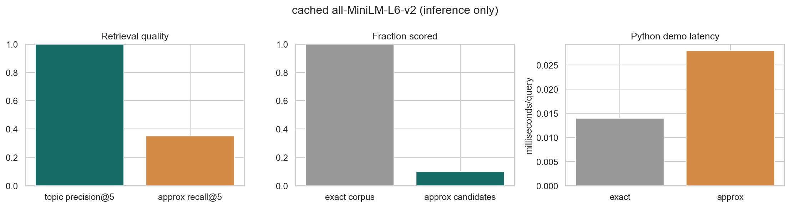

ML Hands-on Lab · 03 — Instance-based
Vector search
1. The one-sentence version
Vector search turns meaning into coordinates, then retrieves nearby coordinates exactly or with a faster approximate index.
2. The intuition
Give every sentence a location on a semantic map. Exact search checks every address; approximate search first chooses a neighbourhood, accepting that the border may hide a good match.
A five-item example
For five one-dimensional similarities [0.12, 0.91, 0.44, 0.88, -0.1], exact top-2 returns indices 1 and 3. An approximate bucket that contains [0,1,4] checks only three items but misses index 3, giving recall@2 of 1/2.
3. The maths in plain English
\[\cos(q,x_i)=\frac{q^Tx_i}{\lVert q\rVert\lVert x_i\rVert},\quad \operatorname{recall@k}=\frac{|A_k\cap E_k|}{k}\]
q is the query vector, xi a document vector, cosine is their angle similarity, Ek the exact top k, and Ak the approximate result. Recall measures neighbours lost to indexing.
4. What the model is actually doing during training
- Normalize document vectors.
- Project each vector onto seeded random hyperplanes.
- Turn projection signs into a compact binary bucket key.
- At query time search matching or nearby buckets, then rerank candidates exactly.
5. The knobs
| Knob | Too low | Too high |
|---|---|---|
| embedding model | Cheap but misses semantics. | Slow, large, or domain-mismatched. |
| hash bits | Huge candidate buckets. | Tiny buckets miss neighbours. |
| probe radius | Fast with lower recall. | Approaches an exact scan. |
6. Assumptions and failure modes
Embedding distance must reflect user relevance, vectors should be normalized for cosine, and index recall must be measured on representative queries. Approximation helps at scale, not automatically on tiny corpora.

7. Code
Minimal version
vectors = normalize(encoder.encode(documents))
query = normalize(encoder.encode([text]))[0]
top_ids = np.argsort(-(vectors @ query))[:5]Realistic version
# Encode offline, normalize, and build an ANN index.
index.add(document_ids, normalized_vectors)
candidates = index.search(normalized_query, k=100)
results = reranker.rank(query, candidates)[:10]
# Monitor exact-neighbour recall on a held-out query set.8. Where it's actually used
- Searching support articles from a natural-language question.
- Finding duplicate marketplace listings.
- Retrieving passages before a question-answering system.
- Recommending visually or semantically similar products.
9. How it relates to its neighbours
k-NN supplies the basic geometry. TF-IDF is a sparse lexical embedding and a strong baseline. Cross-encoder rerankers score query-document pairs more accurately but are too costly to scan a large corpus.